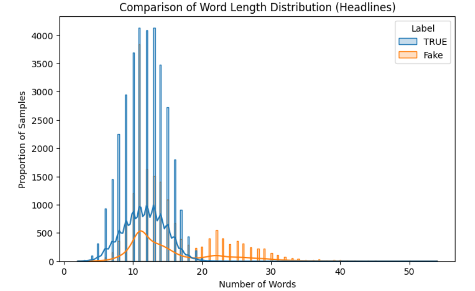
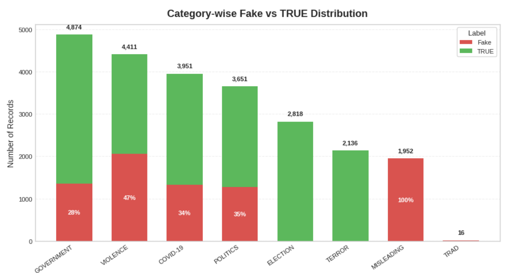

M.Phil Research Progress
A Multimodal Framework for Fake News Detection in Low Resource Settings
M. G. Sonali K. Jayarathne
Supervisors: Dr. Damayanthi Herath, Dr. Janaka Alawatugoda
Engineering Faculty, University of Peradeniya
Dataset Acquisition & Infrastructure Setup
TRUE Images
17,175
FAKE Images
8,414
Total Downloaded Images
25,589
- Dataset Issue Resolved: Successfully completed large-scale image acquisition from the IFND dataset. Identified 31,125 broken image links
- Storage: Dataset securely stored and organized in Google Drive.
- Infrastructure Constraint: Google Colab computational and storage limitations were identified as the primary challenge during dataset acquisition.
Dataset Cleaning & Integrity Audit
- Original IFND Dataset: 56,714 news records.
- Image Retrieval: 25,588 images successfully downloaded and indexed.
- Text Deduplication: 5,604 duplicate text records eliminated (100% label-consistent).
- Clean Text Dataset: 51,110 unique news records retained after deduplication.
- Image Repository Refinement: 1,779 duplicate images identified and removed to ensure matched pair integrity.
- Text-Only Orphans: 27,301 unique records without images.
- Missing Value Audit: Core labels are 100% complete,Date field contains 11,321 missing values.
| Dataset Version |
True |
Fake |
Total |
| Original Dataset |
37,800 (66.65%) |
18,914 (33.35%) |
56,714 |
| Clean Text Dataset |
33,684 (65.90%) |
17,426 (34.10%) |
51,110 |
| Final Multimodal Dataset |
15,832 (66.50%) |
7,977 (33.50%) |
23,809 |
Exploratory Data Analysis - Headline Length
Word count analysis was conducted to compare the length distribution of fake and true news headlines.

| Metric |
Fake News |
True News |
| Mean Length |
15.25 words |
11.73 words |
| Median Length |
13.0 words |
12.0 words |
| Standard Deviation |
6.29 |
3.01 |
- Fake news headlines have a higher mean word count and a larger standard deviation showing that they are generally longer and more varied in length.
- True news headlines show a lower mean word count and smaller standard deviation.
This observation is consistent with Horne and Adali (2017), who found that fake news uses distinctive title structures compared with real news.
1-IFND->EDA->Horne_fakenews_NECO2017-2
Dataset (Final Multimodal Dataset)
- Columns - id, Statement, Image, Web, Category, Date, Label, image_path
- Classification labels - Fake and True (Binary)
Headline Length and Structural Patterns
- Fake headlines show a higher average word count compared with TRUE headlines.
- TRUE headlines are shorter on average and show lower variation in length.
- The larger standard deviation in fake news indicates that fake headlines have a wider spread in word length.
Data Audit
- 4,010 samples are marked as AUGMENT in the final multimodal dataset.
- These samples represent approximately 50.2% of the fake news class.
- The augmented samples help increase fake-class coverage but further checks are required to confirm their semantic quality and effect on model performance.
Category Distribution Audit

- The final multimodal dataset shows an uneven distribution across topic categories.
- Some categories contain both Fake and TRUE records, while others are dominated by one label.
IFND Topic Category: Label Density & High-Stakes Clusters
| Category |
Fake |
True |
Total |
True Density (%) |
Fake Density (%) |
| MISLEADING | 1935 | 0 | 1935 | 0.00 | 100.00 |
| TRAD | 16 | 0 | 16 | 0.00 | 100.00 |
| VIOLENCE | 2058 | 2353 | 4411 | 53.34 | 46.66 |
| POLITICS | 1271 | 2380 | 3651 | 65.19 | 34.81 |
| COVID-19 | 1326 | 2625 | 3951 | 66.44 | 33.56 |
| GOVERNMENT | 1351 | 3523 | 4874 | 72.28 | 27.72 |
| ELECTION | 3 | 2815 | 2818 | 99.89 | 0.11 |
| TERROR | 0 | 2136 | 2136 | 100.00 | 0.00 |
Summary of Related Studies
| Study ID |
Authors |
Year |
Model |
Dataset Size |
Data Splits |
Best Accuracy |
| S1 |
Sharma et al. |
2021 |
Random Forest, LSTM, Bi-LSTM |
56,868 |
67% Train / 33% Test |
94.0%, 92.7% |
| S2 |
Sharma et al. |
2022 |
LSTM + VGG16 |
56,868 |
67% Train / 33% Test |
92.5% |
| S3 |
Wilson et al. |
2023 |
SVM |
56,714 |
72% Train / 28% Test |
93% |
| S4 |
Shivani et al. |
2024 |
ConvNeXt-Tiny, Swin Transformer |
56,868 |
Standard split |
88.86%, 91% |
| S5 |
Dhiman et al. |
2024 |
GBERT |
56,868 |
80% Train / 20% Test |
95.30% |
| S6 |
Qu et al. |
2024 |
Temporal Enhanced Multimodal GNN |
126K Augmented |
Train:3069 / Validation:341 |
96.06% |
| S7 |
Kumar et al. |
2025 |
CNN-LSTM, BiLSTM-CNN, Parallel CNN-LSTM |
56,714 |
20% Validation |
93.35–94.09% |
| S8 |
Kavya et al. |
2025 |
MF-BERT |
56,714 |
80% Train / 20% Test |
97.03% |
| S9 |
Sharma et al. |
2025 |
BERT-CNN |
56,714 |
67% Train / 33% Test |
99.30% |
| S10 |
Kumar et al. |
2025 |
LLM |
56,868 |
Not Reported |
Few-shot:0.356
Zero-shot:0.562 |
| S11 |
Cui et al. |
2025 |
GNN + RWKV MLP-Mixer |
56,868 |
Train/Val/Test Reported |
Not Reported |
| S12 |
Tufchi et al. |
2025 |
ConvNeXt |
56,868 |
Not Reported |
87.9% |
| S13 |
Shivani et al. |
2025 |
LLM |
Not Mentioned |
Not Reported |
98.03% |
| S14 |
Dhiman et al. |
2025 |
BERT, GPT |
56,868 |
Merged with FakeNewsIndia |
95.43% |
| S15 |
Divya et al. |
2025 |
Autoencoder Neural Network |
Not Reported |
Not Reported |
86% |
| S16 |
Cotroneo et al. |
2026 |
LLM |
Mentioned Only |
Not Reported |
Not Reported |
| S17 |
Trivedi et al. |
2026 |
DistilBERT + ANFIS |
56,713 |
Stratified 5-Fold CV |
97.06% |
| S18 |
Ai et al. |
2026 |
LVLM |
Not Explicitly Mentioned |
Not Reported |
Not Reported |
Fake News Datasets Available
Overview of Multimodal and Related Fake News Benchmarks
| Dataset |
Year |
Modalities |
Total Size |
Train |
Validation |
Test / CV |
Split / Access Notes |
| Factify 2.0 |
2023 |
Text, Image |
50,000 samples |
35,000 |
7,500 |
7,500 |
70:15:15 split structure, registration/form access required. |
| MOCHEG |
2023 |
Claim + Text Evidence + Images |
15,601 claims |
Available after dataset access |
Available after dataset access |
Available after dataset access |
Google form/dataset request, useful for multimodal fact-checking. |
| NewsCLIPpings |
2021 |
Text, Image |
1,345,200 pairs |
1,111,828 |
116,468 |
116,904 |
Automated mismatched image-text pairs, requires VisualNews and setup script. |
| PolitiFact Fake News |
Hugging Face Dataset |
Text |
21.3k rows |
17.1k |
- |
4.23k |
Directly downloadable from Hugging Face, useful as a text-only baseline. |
| r/Fakeddit |
2020 |
Text + Images + Metadata |
1M+ samples |
Available |
Available |
Available |
Requires separate handling of text and images, use a smaller multimodal subset for laptop experiments. |
Other Models for Consideration
-
Text-Based Transformer Models - BERT, DistilBERT, RoBERTa, GBERT
-
Image Feature Extraction Models - ResNet-50, VGG-16, EfficientNet, Vision Transformer
-
Hybrid Deep Learning Models - CNN-LSTM, BiLSTM-CNN, Parallel CNN-LSTM, BERT-CNN
-
Multimodal Fusion Models - DistilBERT + ResNet-50, BERT + CNN, MF-BERT, attention-based fusion
-
CLIP-Based Models - CLIP, OpenCLIP for image-text semantic alignment
-
Graph-Based Multimodal Models - CMGN, TEMGNN, Text GNN, RWKV MLP-Mixer with cross-feature fusion
-
VLM / LVLM-Based Reasoning Models - BLIP-2, InstructBLIP, LLaVA, Qwen-VL, Qwen2.5-VL
Research Gaps in Multimodal Fake News Detection
-
Limited VLM Evaluation on IFND / Indian Datasets:
Most Vision-Language Models (CLIP, BLIP-2, LLaVA, Qwen-VL) have been evaluated primarily on Western datasets. Only a few studies like F2IND-IT and MF-BERT (2025–2026) explicitly target IFND, indicating a lack of systematic VLM evaluation for Indian multimodal fake news detection.:contentReference[oaicite:0]{index=0}
Trivedi et al. - DistilBERT+ANFIS (2026) and Kavya et al. - MF-BERT (2025)
-
Need for Lightweight / Frozen VLM Methods for Consumer-Grade Hardware:
Most LVLM-based studies focus on large-scale fine-tuning or cloud deployment (MERF, LVLM surveys). Few studies consider parameter-efficient methods suitable for local, low-resource setups. This gap is critical for practical deployment on IFND and small-scale hardware.:contentReference[oaicite:2]{index=2}
Implication: These gaps justify a study that evaluates frozen/fine-tuned VLMs on IFND, tests cross-dataset performance, and proposes lightweight multimodal fake news detection methods suitable for consumer-grade environments.
❮
❯